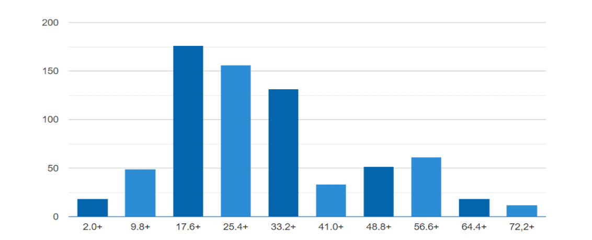

Веб-студія
Організація діяльності
інтелектуального колективу
Продуктом роботи веб-студії є сайти або веб-додатки. Варто зазначити, що існує два види компаній- аутсорсингові, які працюють з замовниками та створюють програмний продукт для них згідно їх бажань та вимог, та product-компанії, які розробляють власне програмне забезпечення. Якщо говорити про створення сайтів, веб-студії найчастіше розробляють корпоративні сайти, інтернет-магазини, портали та сервіси. Сучасний користувач- людина, яка значну частину часу проводить в віртуальному світі, тому послуги веб-студій в теперішній час є дуже популярними та просто необхідними! А продукти, які виробляють такі компанії є високоякісними та зручними у користуванні.
Етапи роботи веб-студії

1. Збір вимог
Активне спілкування з замовником для визначення всього функціоналу продукту
2. Проектування
Визначення технологій, побудова високорівневої архітектури, створення макетів інтерфейсу
3. Кодування
Написання вихідного коду для реалізації продукту
4. Тестування
Перевірка актуального результату ПЗ з очікуваним, який описаний у вимогах
5. Впровадження
Тестування продукту на віртуальній машині, передача користувачеві
6. Підтримка
Виправлення помилок, які знайшли користувачі продукту
Вміння працювати в команді- одна з найважливіших навичок при роботі над проектом. Та для того, щоб працювати ефективно важлива не тільки внутрішня командна взаємодія, але й правильний розподіл обов’язків між учасниками. Важливо, щоб людина, яка виконує певну роль була компетентною в галузі та знала свої обов’язки. Що це означає? Буде неправильним рішенням розробнику з досвідом в рік роботи доручити обов’язки архітектора ПЗ, так як в нього недостатньо досвіду та знань для того, щоб виконати весь обсяг роботи правильно.
Команда розробників
Менеджер проекту розподіляє завдання між командою, планує хід роботи, мотивує команду, контролює процес та координує спільні дії. Також він несе відповідальність за тайм-менеджмент, управління ризиками та дії у разі непередбачених ситуацій. Основний обов’язок і відповідальність PM – довести ідею замовника до реалізації у встановлений термін, використовуючи наявні ресурси. В рамках цієї задачі PM’у необхідно створити план розробки, організувати команду, налаштувати процес роботи над проектом, забезпечити зворотній зв’язок між командами та замовником, усувати перешкоди для команд, контролювати якість і виконання термінів. Його основне завдання полягає в управлінні проектом. Як і бізнес-аналітик, менеджер проекту також може бути включений у комунікацію з клієнтом, проте головним завданням PM є робота безпосередньо з командою розробників програмного забезпечення. Середній вік в Україні- 30 років. Вирізняються високим рівнем освіти (тільки 6% не мають вищої освіти). Зарплата 1700-2500$.
Це фахівець, який досліджує проблему замовника, шукає рішення і оформлює його концепцію в формі вимог, на які надалі будуть орієнтуватися розробники при створенні продукту. Середньому українському бізнес-аналітику 28 років, він має зарплату $ 1300-2500 і досвід роботи 3 роки.
Це IT-фахівець, який керує своєю командою розробників, володіє технічною стороною, бере участь у роботі над архітектурою проекту, займається рев'ю коду, а також розробкою деяких складних завдань на проекті. За статистикою ДНЗ, середній вік українських тімлідів – 28 років, середній досвід роботи – 6,5 років, середня зарплата – $2800.
Приймає рішення щодо внутрішнього устрою і зовнішніх інтерфейсів програмного комплексу з урахуванням проектних вимог і наявних ресурсів.Головна задача архітектора – пошук оптимальних (простих, зручних, дешевих) рішень, які будуть максимально відповідати потребам замовника і можливостям команди. За статистикою ДОУ, середньому українському архітектору 30 років, він має 9-річний досвід роботи і отримує $ 4000.
Спеціаліст, який займається проектуванням інтерфейсів користувача. В середньому українському дизайнеру – 26 років, він має досвід роботи від півроку (джуніор) до 5 років (сеньйор) і отримує зарплату $ 1000-200
Фахівець, який пише вихідний код програм і в кінцевому результаті створює технології. Програмісти також мають різні галузі експертизи, вони пишуть різними мовами та працюють з різними платформами. Тому і існує така “різноманітність” розробників, залучених до одного проекту. На одному проекті переважно завжди є як мінімум два програмісти- перший, який займається back-end розробкою та інший, відповідальний за front-end. Існує два напрямки програмування - системне та прикладне. Системні програмісти мають справу з ОС, інтерфейсами баз даних, мережами. Прикладні – з сайтами, програмним забезпеченням, програмами, редакторами, соцмережами, іграми тощо. Програміст розробляє програми за допомогою математичних алгоритмів. Перед початком роботи йому необхідно скласти алгоритм або знайти оптимальний спосіб вирішення конкретного завдання. В середньому українському програмісту 27 років, його зарплата в середньому дорівнює $ 1500-2500, а досвід роботи становить 4,5 років.
Фахівець, необхідний для кожного процесу розробки для забезпечення високої якості продукту. Вони тестують його, проходять через усі додатки та визначають баги та помилки з подальшим наданням звіту команді розробки, яка проводить їх виправлення За даними ДОУ, середньому українському QA-інженеру 26 років. Він має досвід роботи від півроку (джуніор) до 5 років (сеньйор) і отримує зарплату $ 600-2700.
Ключове завдання support-фахівця (або Customer Support Representative) — відповідати на запитання і допомагати клієнтам у телефонному режимі, поштою або у чаті. Решта завдань залежать від процесів у конкретній компанії.
Найбільш затребувані спеціалісти команди розробки
